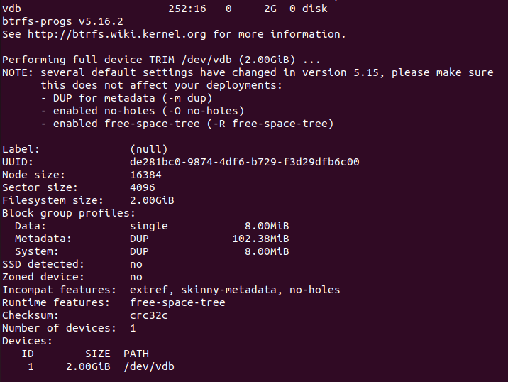
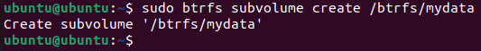
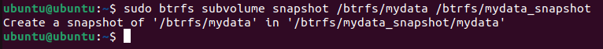
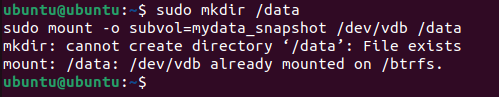
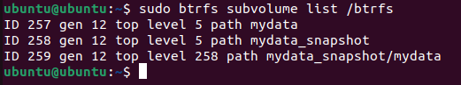

✅ PRACTICE 3: CREATE SYSTEM SNAPSHOT USING BTRFS
This practice involves creating a system snapshot using Btrfs, a modern filesystem that supports advanced features like snapshots and subvolumes.
🯠Objective:
Create a snapshot of a disk on the local system using Btrfs and mount it to /data.
ğŸ› ï¸ Steps:
- Add Virtual Hard Disk
- Format Disk with Btrfs:
lsblk sudo mkfs.btrfs /dev/sdb - Mount Disk:
sudo mkdir /btrfs sudo mount /dev/sdb /btrfs
- Create a Subvolume:
sudo btrfs subvolume create /btrfs/mydata - Create Snapshot:
sudo btrfs subvolume snapshot /btrfs/mydata /btrfs/mydata_snapshot - Mount Snapshot to
/data:
sudo mkdir /data sudo mount -o subvol=mydata_snapshot /dev/sdb /data - Validate Snapshot:
sudo btrfs subvolume list /btrfs